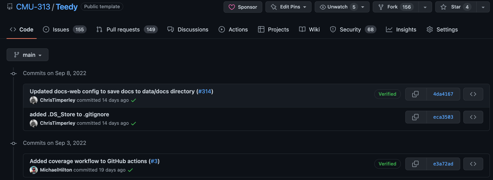

17-313: Foundations of Software Engineering
Homework 3: Teamwork
The key learning goals of this homework are that you are able to:
-
Plan and schedule projects in terms of tasks, milestones, and time estimations, and re-plan as required
-
Make initial decisions on a process, and reflect on experience with the process
-
Effectively coordinate among team members and conduct effective team meetings
-
Meaningfully reflect on the experience of working in teams
-
Collaborate in development projects using Git and engage in good software writing practices
-
Practice getting to know a pre-existing code base and developing new features for it using previously unfamiliar technology
Project context
In HW2, you familiarized yourself with Teedy; You set up your development environment and workflow, and explored the full layers of Teedy by implementing a small feature change or addition. Now, we want to take a more serious step to build the graduate student admission management system.
You and your team are beginning to sketch out and implement a replacement admissions system. You start with a simplified workflow that you hope to build from later: assume a single academic program, and that applicants upload single resumes to apply. Resumes are assessed by 3--4 reviewers along several dimensions (like “skills”, “experience”, “GPA”, etc), along with additional notes/commentary. This information is used to inform admissions committee discussions and decisions.
Your first goal is to decide which feature you should/will implement to improve the system. Have an initial brainstorming meeting, and come up with a feature that touches all three layers (Java Backend, REST middleware, and Angular.js frontend). Here are some of the features that teams implemented in the past:
-
A dashboard or pane for reviewer assignment and management.
-
A form for reviewers to enter and score candidates along various (custom/admissions-specific) directions, to be saved and possibly aggregated across multiple reviewers.
-
A dashboard or pane for aggregating and displaying statistics, like average review score per candidate; average review score per reviewer; or other aggregate statistics for the applicant pool.
Then, you will do so, over the course of a 2-week sprint, while establishing and following a good software engineering process, including appropriate git flow and testing of the eventual feature. Specifically, this entails:
-
Do an initial sprint planning meeting. Assess your feature options and choose which one you will implement first, for this assignment. Construct your backlog (decompose the task, roughly estimate the time required for the sub-tasks, identify dependencies, and plan the implementation accordingly). The selected feature should (1) be able to be divided into at least N (the number of team members in your team) sub-features, and (2) require you to make changes in each of the three layers of Teedy’s stack.
-
Perform a 2-week sprint to implement and user test the feature in question. You will likely not have time to produce a perfect feature, but you should be able to produce a reasonable prototype.
-
Throughout the project, track your time investment, synchronize tasks with your team, and regularly update the plan. Take meeting minutes and track how you divide up the work.
-
Document your code/feature, user testing approach, and process and decision-making. It should be easy for the TA to run and test your feature within Teedy.
We encourage you to read and follow the Team Policy, which has suggestions for effective group work in a course setting (you may have to adapt some of these suggestions for collaborating on a software project, but you may still find the structure helpful).
Plan carefully to decide which features to develop, and in what order, and then start writing code effectively as a team.
Process
You should create a new public team repository for this project.
https://classroom.github.com/a/i2efqHx6
You can still import the changes you have made for HW2 into your new repository. Be sure to use good development practices. We will be grading you on how well you follow the process we covered in the lectures and recitations:
- use a kanban board to manage the workflow,
- create issues for feature improvements or bug-fixes,
- when creating issues, assign team members and tag them with appropriate labels,
- create a pull request and reference the issue to merge the changes,
- provide feedback to pull requests,
- document design decisions and implemented functionalities,
- write automated tests for the features you implement,
- and use GitHub Actions for continuous integration (CI).
Like in HW2, you will not create an issue or a pull request in the parent repository, but in your team repository. It is not acceptable for one person to commit all work after synchronizing through other means. This will factor into your grade.
The code, testing, and documentation deliverables below will be taken by snapshotting your repository at the deadline.
Deadlines and deliverables
This homework has three (3) deadlines and four (4) deliverables. The first deadline (Thursday, September 29, 23:59) is for an initial planning document and backlog. The second deadline (Thursday, October 6, 23:59) is for the technical artifacts. The third deadline (Thursday, October 13, 23:59) is for two (2) reflection tasks. We intentionally separated these deadlines to ensure upfront documentation of the planning process and to give you time to reflect. Of course, you are still encouraged to start developing before the second deadline and reflecting before the third.
(1) Initial plan (due Thursday, September 29, 23:59) – 60 points
-
An initial technical/sprint plan and backlog, with justification. First, indicate which feature you chose to implement first, and why. Then, present your initial backlog for the sprint (from before you started implementing; you will discuss changes/replanning that happened in a later deliverable). You are encouraged to include supporting evidence for all of your decisions and estimates (i.e., an explanation for how you arrived at that decision/value). To grade your team, we will be looking for the following information to be documented in your team’s GitHub Projects board:
-
a set of overall tasks necessary to implement the feature (these tasks together should result in a feature, but each task is a small step along the way to the feature),
-
estimated effort for each task,
-
dependencies among tasks,
-
which you plan to tackle for the first sprint to build the core functionality,
-
task assignments for team members for the initial sprint planning,
-
acceptance criteria (how do you tell when this task is done - you can think about how you will test this feature).
-
-
An initial process plan. On Gradescope, you will describe the process you are planning to follow. By process, we mean how you are going to develop the system and which steps you are going to follow, rather than a technical design model of the software. Specifically, we are interested in how you are planning to collaborate (e.g., communication channels, meetings and their frequency, pull requests or dropbox) and in what overall development activities you plan (e.g., how much design, which quality assurance steps, how shall parts be integrated).
We will not grade the accuracy of your prediction or how well you stuck with your initial plan; instead, we will focus on how well you decomposed the problem and justified your original plan, how you responded to changes in the replanning, and how well you analyze and reflect on your experience (see below).
2) Code artifacts (due Thursday, October 6, 23:59) – 60 points
We will take a snapshot of the implementation from your team’s GitHub repository at the deadline.
Your repository should include the implementation of the system, automated tests for the new feature, and a documentation of how to use and user test your new feature (indicate where this documentation is found from the top-level README.md file).
You should follow best practices for collaborative development such as using feature branches, pull requests, and code review (e.g., tackling each layer of the stack in a separate PR). Specifically your team should collaborate on this feature by committing changes to a branch named for the feature you are implementing.
GitHub Actions should be enabled. It is reasonable to have failures in feature branches, but you should do your best to make your main branch build consistently pass.

Adhere to good coding practices. For example, your code should have a clear structure, be reasonably modularized, use appropriate variable names, and be documented.
We expect you to write a set of automated tests that demonstrates the functionalities you implemented (according to your acceptance criteria from the initial planning).
We will look at the commit, issue, and pull request history.
Every member of your team must contribute to the implementation: each team member must have at least one commit as a part of the solution. Failure to do so will result in a significant penalty to your grade.
You must commit all of your changes to the main branch of your repository before the homework deadline. Unlike HW01, you should not submit your changes to the parent Teedy repository.
(3) Reflection – Team (due Thursday, October 13, 23:59) – 60 points
After coding is complete, reflect on your experience as a team. Again, we look for honest reflection, which will likely include reflection on failures. We will not grade whether you predicted the effort correctly, but rather what you learned from the process. There will be 5 reflection questions on Gradescope:
-
Actual Schedule: Document the actual schedule, including the tasks you actually performed and the actual amount of time each took. Ideally, you will have kept your schedule up-to-date throughout the project, simplifying this task.
-
Schedule Deviations: Reflect on the differences between the initial and the final schedule. Which milestones were predicted correctly? What was re-planned? Were there any activities you didn’t plan for initially or that you had to drop in the end? What were the reasons for the changes? Could they have been foreseen with better planning?
-
Process: Reflect on the process you initially planned to follow, and the process you actually followed. Was the process adequate? Did you skip steps or adopt additional techniques during the project? What challenges did you face? How could the process be improved if you had to do another, similar project? How might you have to change the process to adapt to a different type of project?
-
Team Experience: Reflect on your experience working as a team. What worked well? Were team meetings efficient? How well, and through which processes, did you communicate? What needs improvement? Were there any teamwork challenges you resolved as the project progressed?
-
Meeting Minutes: Attach all meeting minutes kept throughout the project, which should include information about the agenda/topics discussed, decisions made, and work assignments. Recording results of meetings can be onerous; you must explicitly rotate this responsibility among the members of your team (and indicate who took which minutes).
One of the main purposes of this homework is to encourage in-depth analysis of the reasons for good or bad time estimation, scheduling, and teamwork coordination. Doing poorly in these is not unusual (as numerous reports from real-life projects show). Therefore, we will not evaluate how well (or badly) the project went, but instead how well you understood the reasons [why]{.underline} the project went as it did, and what lessons you drew from your experience to inform your future work. A good reflection document will include concrete statements about lessons learned, with clear supporting evidence, such as examples, to support the claims. It is a good idea to reference your meeting protocols to support your claims and provide examples. For example, “We could have communicated better.” is weakly supported. One could strengthen it with examples from the development experience as follows: “One source of [defects/development slowdown/quality problems] was the integration of components A and B, because the API for A was not well-understood by the developer of B…In the future, we might try to use [such-and-such a process] for clearly documenting and communicating such design decisions, rather than [the process we did follow/failed to follow].”
Being able to communicate effectively is an important software engineering skill. As such, your reflection should be well-written and easy to read. Be sure to leave time after writing for revision and proofreading. There are many convenient tools for collaborative text editing; the course staff used Google Docs for this homework document.
(4) Reflection – Individual (due Thursday, October 13, 23:59) – 60 points
You will answer individual reflection questions on Gradescope (HW3 Individual Reflection). We will ask you to reflect on the process, scheduling, and teamwork.
(Note that this is due at the same time as the team reflection.)
Separate from the reflection done as a group, each team member should individually reflect on (1) the process, (2) the scheduling, and (3) the teamwork, and connect this project experience with their previous experience (preferably experience from a non-academic setting, but experience from class projects is also fine). You do not need to answer any specific questions, but the following questions may guide possible content for the reflection: How does this project experience align with your previous experiences? What was similar? What was different? What did you personally learn from this project’s development process? Is there something you are planning to do differently in your future projects? Similar to the team reflection task, we will grade the quality and depth of your reflection.
Grading
You will be graded as a team, with an individual component. This homework is worth 240 points. We will grade you based on the learning goals listed above.
The initial planning constitutes 60 points (25%), the technical artifacts and adherence to the process constitute 60 points (25%), the team reflection constitutes 60 points (25%), and the individual reflection constitutes 60 points (25%).
To receive full credit for the planning, we expect:
-
A sensible justification for the feature you selected to implement in this sprint.
-
A backlog that includes tasks, dependencies, time estimates, and assignments, as described above.
-
An outline of the process steps to be adopted in this project.
To receive full credit for the technical artifacts, we expect:
-
A running prototype implementation.
-
Automated test cases for the implemented functionalities.
-
GitHub Actions set up and used for builds and automated tests.
-
Reasonable documentation of the new feature.
-
Reasonable code structure and style, including documentation where appropriate.
-
Coherent commits of reasonable size with meaningful commit messages by all team members.
-
Reasonable quality of issues, pull requests, and comments.
-
Reasonable QA/user testing for the new feature.
To receive full credit on reflection, we expect:
-
A detailed, well written, and well structured reflection on the issues listed above.
-
A comparison between the planned and the actual schedule.
-
An analysis beyond mere descriptions and superficial statements, including supporting evidence for claims, that reflects on the causes of deviations, conflicts, and so forth, or your own experience.
-
Inclusion of meeting minutes(s) that adequately demonstrate the meeting process.
Notes
This homework (except for the individual reflection) is to be done in your assigned teams. You are highly encouraged to openly discuss all team issues that may arise in the process of working within the teams. After this homework, we will perform a peer-feedback survey to identify any common issues that we will then address in class. If severe issues occur reach out earlier to the course staff.